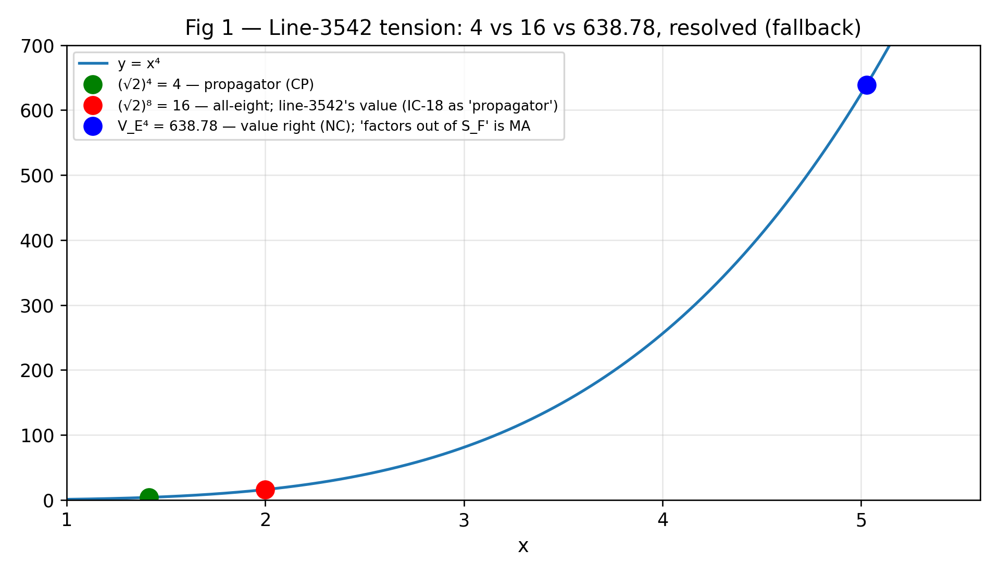
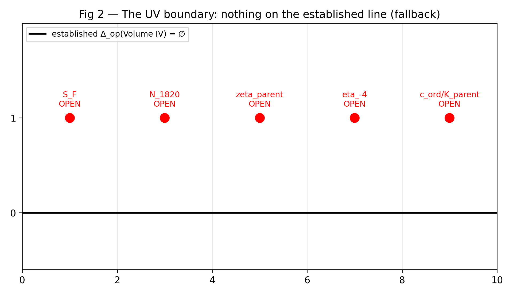

A restructured rewrite of Book 19 and Appendices A–C of R Theory — Volume IV (v1, the audit
authority). Pictures and intuition first; the formal audit second. Every claim carries exactly one status:
CP checked proof, SC completed symbolic check,
NC completed numerical check, ST standard imported theorem,
MA manuscript assertion, AX assumption or axiom,
IN incomplete or failed computation, IC incorrect result.
A sampled numerical agreement (~1e-10) is a completed numerical check, never a proof.
Reading this page. The manuscript's own words EXACT / CONDITIONAL / OPEN are its
self-labels, never the audit's verdicts. Figures are live Desmos calculators; if Desmos cannot load, a
static rendering appears instead. Live Desmos rendering was not browser-verified from the build
machine — the static fallbacks carry the verified numbers, generated from the same expressions as the
embeds (see validation/book19/). v1 is the sole audit authority; the
v3 draft's EXACT/CERTIFIED claims and the unsigned certification report are context only.
Source: Volume IV v1, doc 1-T5Eh7tbPcNenfB1ubkUmST5IYq_QGchm5X1ZcIRvoU.
Chunk 5: Book 19 + Appendices A–C — 108 assertions, 0 failed —
CP 73 · NC 1 · ST 2 · MA 31 · AX 1. No timeouts.
Rewrite status: the two tension figures were re-verified from the same
expressions as the embeds — 24 numbered checks in
validation/book19/verify_book19.py, all passing, no timeouts; worst measured error
2.75e-05 on V_E⁴ vs 638.7823 (a completed numerical check — the value is right;
the (√2)⁴ = 4, (√2)⁸ = 16, and crx(112.5°) = V_E identities are exact).
The chunk-5 audit standing above is carried from the audit ledger, not re-derived
here. Embed consistency checked by validation/book19/test_embeds.py. Live Desmos
rendering was not browser-verified from the build machine. Figures illustrate
audit verdicts; they are not the proofs.
Part I — See it first
Two figures. The first resolves a real tension in the manuscript; the second is the book's verdict,
drawn.
Figure 1 — Line 3542: 4 vs 16 vs 638.78, resolved

What you see.y = x⁴ with the three numbers from
Addendum 4.A line 3542 placed where they belong. Green:
(√2)⁴ = 4, the established propagator rapidity product
CP. Red: (√2)⁸ = 16, the all-eight product —
this is the line's "propagator rapidity product is 16", which is IC as stated
(IC-18): v1's own terminology distinguishes the propagator product (4) from the total product (16).
Blue: V_E⁴ = 638.7823 — the line's "product over the four decay octants is
638.78" is NC ✓ (value right; the printed "638.7" is a truncation, not a
rounding). What it doesn't show. The line's "this factors out of S_F" — that is
MA, unsupported, and it conflicts with §17.3.5's honest "its role in the
Clifford contraction remains to be determined."
Figure 2 — The UV boundary: Δ_op = ∅

What you see. The black line is the established physical promotion of Volume IV:
Δ_{op}(\text{Volume IV}) = ∅ — nothing. The red points above it are the open
gates: S_F, N_{1820},
ζ_{parent}, η_{-4},
c_{ord}/K_{parent} — each OPEN, none with a numerical address. This is a
schematic, not a measurement: the honest content is that the line is empty, and the manuscript itself
says so. MA (the manuscript's own admissions, confirmed).
Part II — Then earn it
§§19.1–19.6 — The boundary sections
The audit's verdict on the book's core: no physical promotion is established anywhere in Volume IV
— Δ_{op}(\text{Volume IV}) = ∅ — and this is also what the manuscript itself
says. The sections' gate admissions (§19.2 uniform-action premise OPEN, §19.3 Distler–Garibaldi not
evaded, §19.4 Airy transition not established with only J₀ unconditional) are consistent with Appendix B's
no-go ledger. MA (confirmed admissions) / CP (the
empty-promotion accounting).
The line-3542 tension — resolved as IC-18
Exact text (Addendum 4.A item 5, "Dominant Function and Rapidity"):
"At the four spatial decay octants, the dominant trigonometric envelope takes the same value.
Its product over the four decay octants is 638.78. This factors out of S_F, preserving
field-redefinition invariance. The propagator rapidity product is 16, assigned to ζ_parent."
Sub-claim verdicts:
"Its product over the four decay octants is 638.78" — NC ✓.
V_E⁴ = 638.7823 recomputed; the fourth power of the E-contact dominant value,
consistent with chunks 1–2.
"This factors out of S_F, preserving field-redefinition invariance" — MA
(unsupported), with explicit conflicts: no derivation exists in v1; it contradicts §17.3.5's honest "its
role in the Clifford contraction remains to be determined"; the §17.18.6.4 stripped list contains no
V_E / dominant-function term; "field-redefinition invariance" appears exactly once in v1 and is never
defined or proved. Not IC: S_F is uncomputed, so
no established result is contradicted.
"The propagator rapidity product is 16" — IC (IC-18, incorrect as
stated). The established propagator cosh product is (√2)⁴ = 4 (§17.3.4,
§17.7.2, §17.18.9.3); 16 matches the all-eight product (√2)⁸, and Book 17's
own terminology forecloses the charitable all-eight reading.
Appendix A — status-row cross-check
Five rows labeled EXACT overstate what the audit establishes
(FLAG-A1…A5); three rows are unverified but softly labeled
(FLAG-A6…A8):
FLAG-A1 — Four-contact magnitude (EXACT): overstates. The per-contact 1/4 is archive-sourced
MA; its relation to the certified 1/2 projection coefficient is OPEN per Tier
3.1's own warning. Arithmetic CP; input not established; qualifier missing.
FLAG-A2 — Wick sign (EXACT): overstates. σ_{Wick}^{(t)} = −1 is not
derived anywhere in v1; the "(from archive)" qualifier was dropped. Not independently verified.
FLAG-A3 — Graded-connection rigidity theorem λ = ±1 (EXACT): unverifiable by this audit —
bridge-essay §3.2 content, logged unaudited; Volume I–III coverage not established.
FLAG-A4 — Reduced-matrix-element firewall (EXACT): category error. A firewall is a
methodological principle AX, not a proved result; the audit treats it as sound,
not as a theorem.
FLAG-A5 — Ancestry criterion (EXACT): overstates — contradicts the manuscript's own labels
(§17.5.1 CONDITIONAL, §17.5.2 CONDITIONAL on the uniform-action premise, §19.2 premise OPEN).
FLAG-A6 — Veronese condition at octant boundaries (STRUCTURAL ID): bridge-essay §1.4, logged
unaudited — unverified; the soft label does not overclaim.
FLAG-A7 — Quasi-linear parent magnitude k₀ = β²/(2α)
(CONDITIONAL): Book-16/bridge import, unaudited — unverified; CONDITIONAL is a fair soft label.
FLAG-A8 — Functional form 1/S = cosh w (CONDITIONAL): bridge
import, unaudited — unverified; CONDITIONAL is a fair soft label.
Appendix B — no-go ledger: verified accurate
B1 — "C8 ↔ octant correspondence is not a theorem. The C3/C4 forcing question remains OPEN":
accurate. CP
B2 — "The Distler–Garibaldi theorem is not evaded… candidate, not a resolution": accurate —
matches §19.3. CP
B3 — "The uniform-action premise is not established": accurate — matches §19.2.
CP
B4 — "The Airy transition is not established. Only J₀ is unconditional": accurate — matches
§19.4. CP
Appendix C — codebase skeleton: defects carry over by reference
Appendix C duplicates the §17.18.8.2 skeleton and thereby carries IC-13…IC-16 by reference
(the NullSpace/8255 defect, the Kronecker/sandwich mismatch, the −(1/256) double count, the unassigned
wickSign). IC
Addendum 4.A — two internal contradictions
CONTR-1 (item 6, C8↔octant "Theorem"): states as a theorem with "Proof sketch. ∎" that
EBEOEBEO is "the unique cyclic word preserving parity and boundary continuity" — directly contradicting
the manuscript's own Appendix B NO-GO B1 ("C8 ↔ octant correspondence is not a theorem. The C3/C4
forcing question remains OPEN"). The sketch assumes E contacts "can only reside at zero-crossing decay
nodes" and propagation "must alternate B and O" — neither forced in v1.
CONTR-2 (item 8, foundational alignment): "The real-form E8(−24) framework bypasses this by
using: E8(−24) ⊃ A1 + G2 + C3 … Minimal left ideals of Cl(8) yield three chiral generations without
mirror fermions" states the DG bypass as fact — contradicting §19.3 ("not a proven evasion") and NO-GO
B2 ("not evaded… candidate, not a resolution"). The mechanism is at best a proposal
MA; the E8(−24) host itself is MA per the Volume III
ledger.
Part III — Open gates and unresolved items
Open gates
MA per the manuscript's own admissions, confirmed:
S_F, N_{1820},
ζ_{parent} (k₀ power), η_{-4} (UV selection),
c_{ord}/K_{parent} values, P_{54} location (135 vs
1820 unreconciled), the N_{1820} 1/2 → 1/4 gap, P_{6435},
the explicit 1820 projector, the Frobenius norms, the role of 638.78, the C3/C4 forcing question.
Unresolved
The v3 draft claims S_F = 0.48958371,
N_{1820} = 3, c_{rest} = 1.30555656 EXACT/CERTIFIED
and declares prior snapshots retired — this contradicts v1/v2's admissions and the September 15
normalization verdict, and is not established. v1 remains the audit authority.
The unsigned, undated certification report's "MASTER CERTIFICATION COMPLETE" claim is
contradicted by the open gates above (see the Volume IV overview for the
discrepancy list).
Part IV — Close the book
Established. The 638.78 value (as a number), the 4/16 distinction, the accuracy of the Appendix B
no-go ledger, the eight Appendix A flags, the two Addendum contradictions, and the empty promotion
accounting. Not established: anything the book's open gates name — above all the numerical value of
S_F, without which no contraction closes and no physical promotion follows.
Book 19 is the boundary where the volume's honesty is tested: it passes, because it says what is open.
The full Volume IV record — audit progress, the IC-1…IC-18 findings list, the four-version table, and the
OI-01…OI-29 open-issue chain — is on the Volume IV overview page.